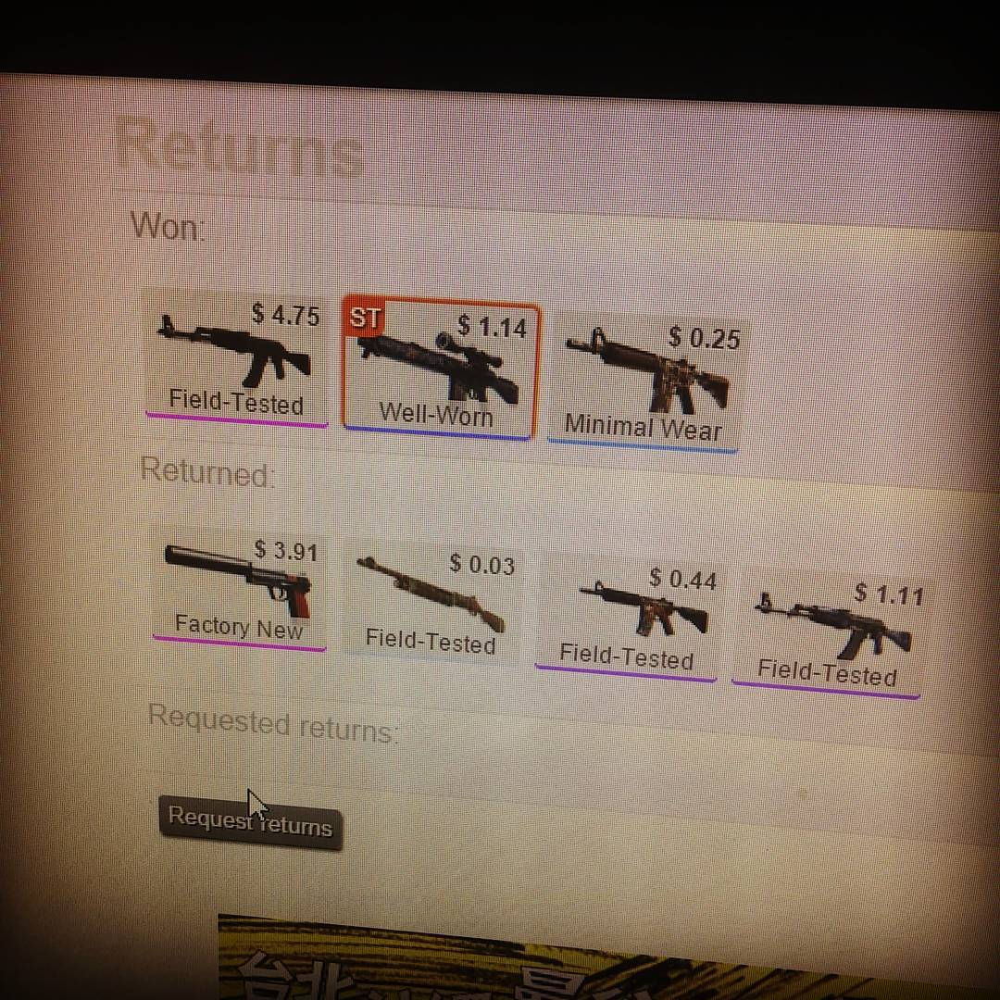

The Gambling
Following the introduction of the Arms Deal update in August 2013, skins formed a virtual economy due to their rarity and other high-value factors that influenced their desirability. Due to this, the creation of a number of skin trading sites enabled by the Steamworks API were created. Some of these sites began to offer gambling functionality, allowing users to bet on the outcome of professional matches with skins. In June and July 2016, two formal lawsuits were filed against these gambling sites and Valve, stating that these encourage underage gambling and undisclosed promotion by some streamers. Valve in turn began to take steps to prevent these sites from using Steamworks for gambling purposes, and several of these sites ceased operating as a result. In July 2018, Valve disabled the opening of containers in Belgium and the Netherlands after their loot boxes appeared to violate Dutch and Belgian gambling laws.
In 2019, Valve made changes to Global Offensive's loot box mechanics due to a realization that "nearly all" of the trading on loot box keys was done by criminal organizations as a method of money laundering. Valve released a statement, saying, “In the past, most key trades we observed were between legitimate customers. However, worldwide fraud networks have recently shifted to using CS:GO keys to liquidate their gains. At this point, nearly all key purchases that end up being traded or sold on the marketplace are believed to be fraud-sourced. As a result, we have decided that newly purchased keys will not be tradeable or marketable.”